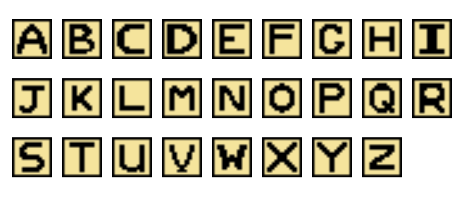
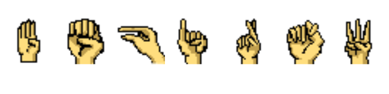

The ASL alphabet is the foundation to learning ASL. The National Institute for the Deaf (NTID) is the world's largest technological college for deaf and hard-of-hearing students in the world, and is located at our very own Rochester Institute of Technology. NTID offers associate, bachelor's, and master's degrees in more than 200 programs offered by RIT, along with one of the most accessible education communities in the world for deaf and hard-of hearing students. AAudiology and speech language services and cutting-edge accessibility solutions are available, along with accessible facilities and an inclusive community.
Concept Development
There were several concepts we were deciding between for the game for the NITD level. We wanted it to have some aspects of the deaf-community while also being informational. At first, we wanted to have the letters given then have them try to choose the ASL letters to match. If we had more time, that could be plausible, but it would also take some time to draw all the hand signs.The game would start with the player talking to an interpreter who would explain the rules of the game. Once the player "talked" with the interpreter, then the puzzle would appear and the player could use WASD to move and the space bar to change between letters. Since it is for an arcade game, we didn't incorporate any logic that would require clicking with a mouse.
If the configuration was incorrect then the interpreter would not let you pass. If it was correct, then the barrier would open to the next level and you would be able to move on. We planned on having 5 or so levels, but due to time constraints, we were only able to fully flesh out two. In the future, we hope to develop this game further and incorporate more features and levels.
Designing the Game
Some of the features we needed to create was the interpreter and hiding the puzzle until they arrive, the text dialog for the interpreter, puzzle configurations and verification, and moving to other levels.Hiding the Puzzle The way we did this was just having the visibility turned off until the player entered the collision shape of the interpreter and pressed space. This is just a stop-gap until we incorporate the dialog that was developed in a separate branch.
Text Dialog The text dialog was created by one of my teammates, so I am not familiar with how she worked it out. But it works as expected.
Puzzle Configurations and Verification The state was measured by the frame the sprite was on for an animated sprite. If the state was correct for each box, then when the player went to the interpreter to verify, it would let them pass. Otherwise, it would not do anything. The functionality we want to implement is that it will give you a hint and tell you that your configuration is wrong.
Moving to other levels We had hoped to have more levels but two are fleshed out right now. There is a barrier preventing the player from moving on until they have verified their solution with the interpreter. An arrow appears to direct the player to the right exit as well. After the player exits the screen, a fade to black animation plays and the player appears at the opposite end of the next level and the interpreter is there too.
Visuals
The TileMap, Player, and interpreter were provided with the texture pack we were provided. The only other graphics that we needed to create were the arrow, hand signs, and letters. Natalie Zesch created the letters. I drew the hand signs.

Challenges we Encountered
We had an impossible time trying to figure out the TileMaps. It was all glitched out and weird for a very long time. I tried to use the bitmap from the grass and that may have been why it wasn't working. I had to manually configure the grid and afterward we were able to create a cohesive map.It was also challenging to figure out the fade to black since I never dealt with CanvasLayers. It still is not working exactly as intended since the animation isn't long enough for the time it takes for the player to get to the other side of the map.